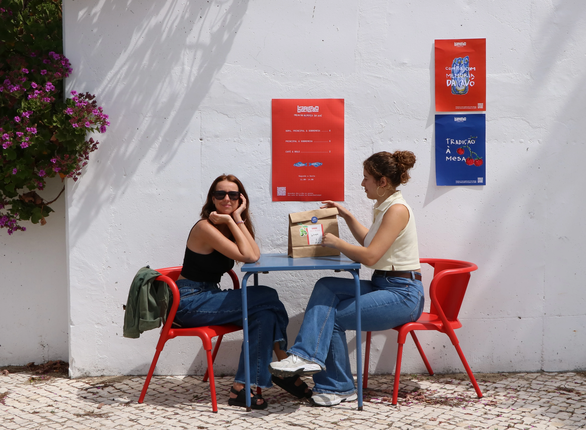
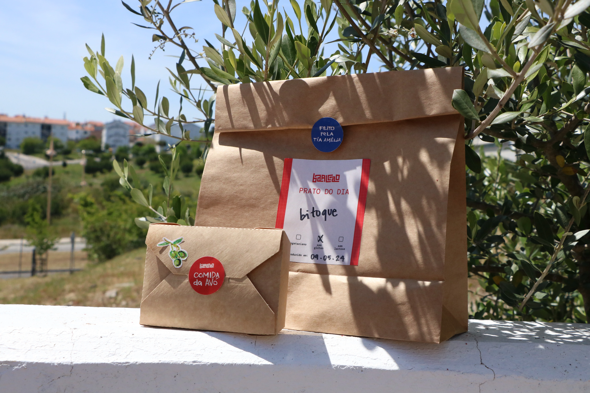
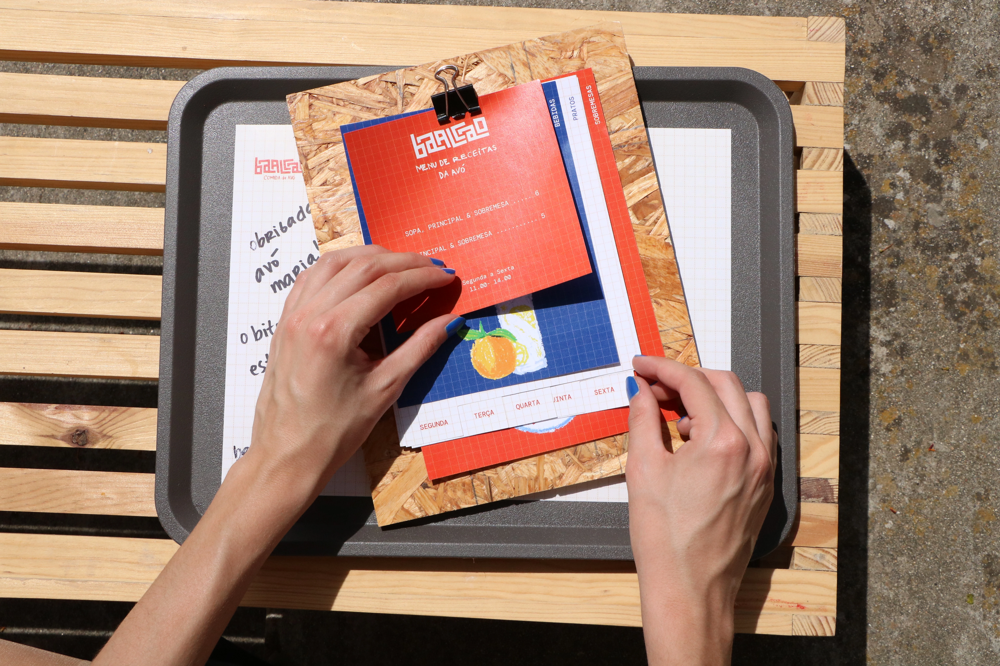
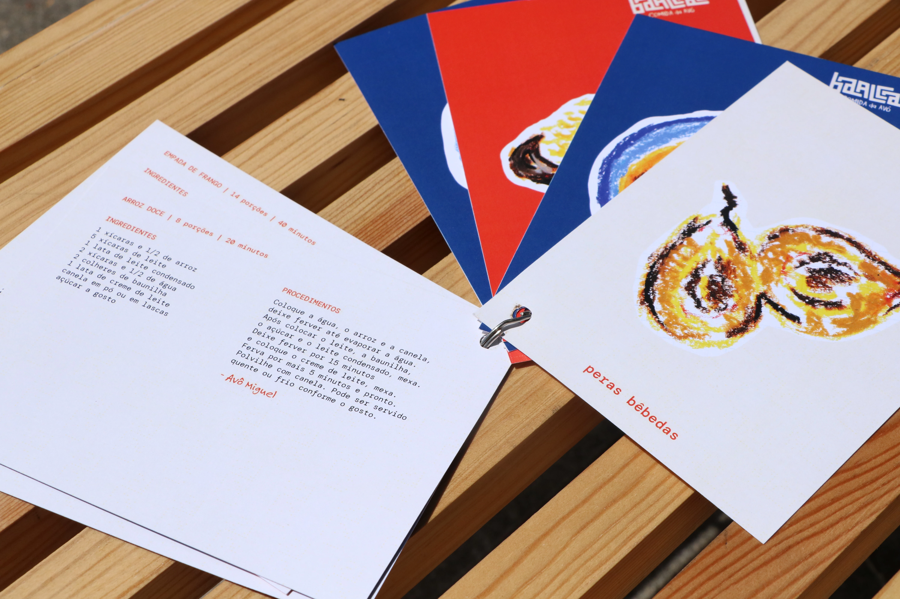
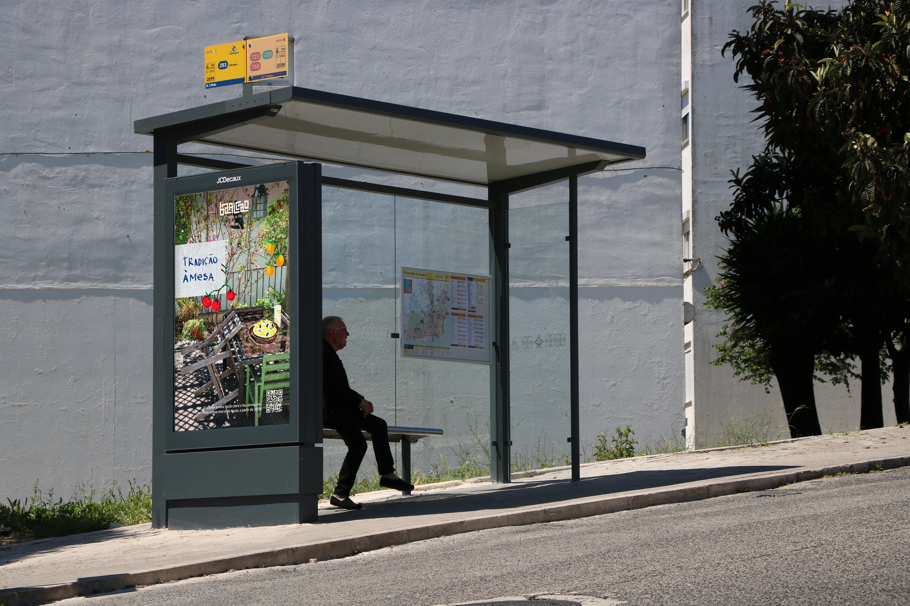
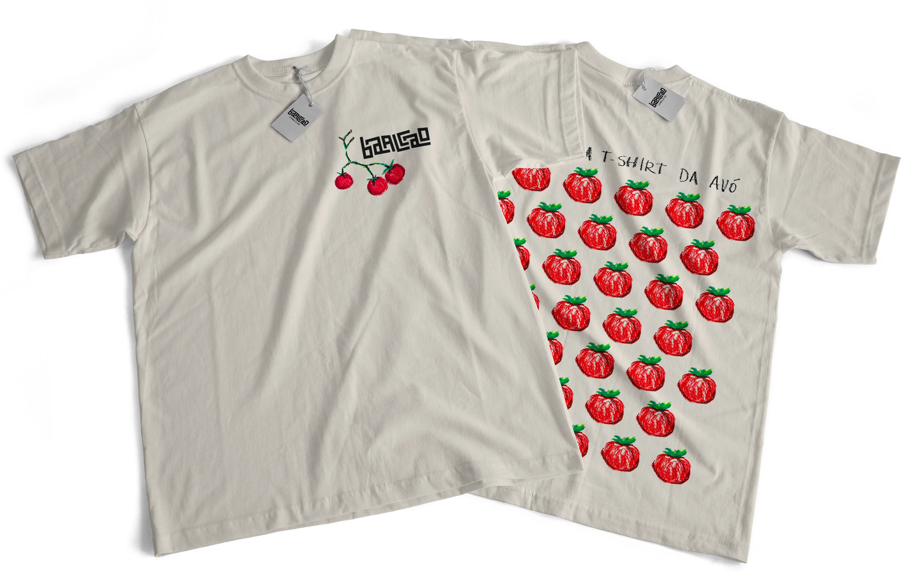
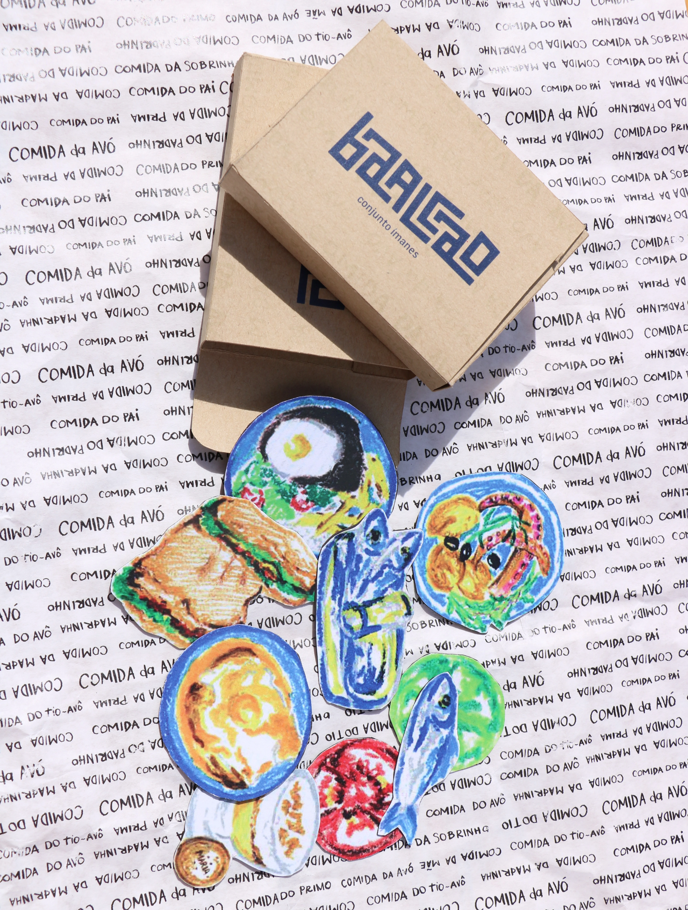
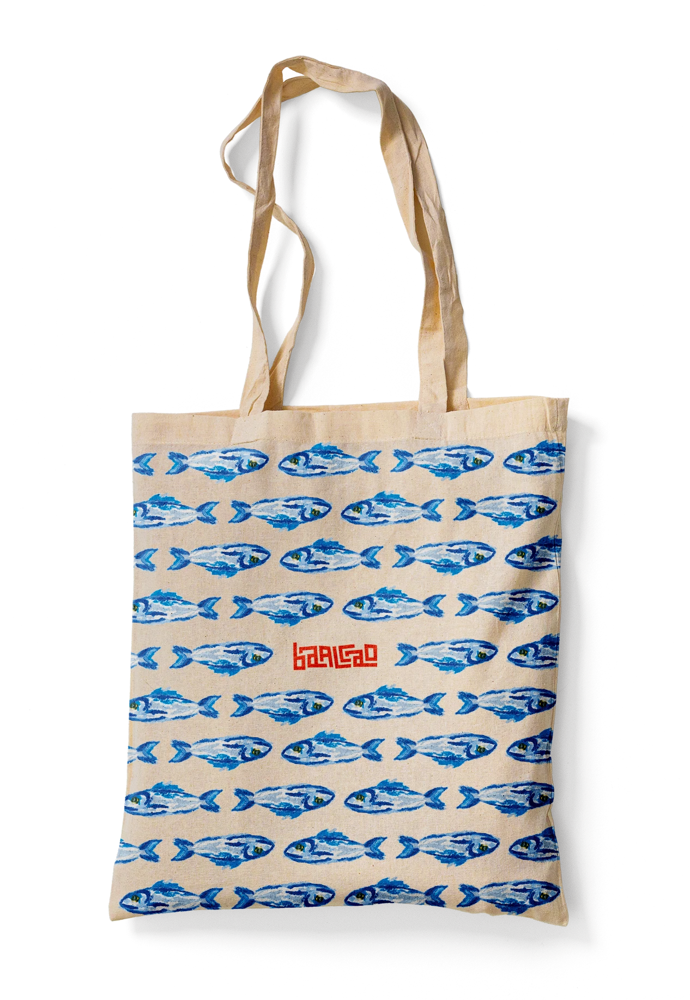

→ BRAND IDENTITY




The identity of Baalcao is rooted in the concepts of handmade tradition, shared memories, and the authenticity of local Portuguese products. Our design process evolved from manual sketches into a refined custom typeface inspired by the calçada, creating a visual connection between community and heritage.
→ POSTER CAMPAIGN


The Zonzo mobile app works as a collector of activities. The map function highlights the places that have already been reappropriated by the actions of young people as skating, dancing, writing poems or drawing murales. The feed shows gifs or audio tracks of the other zonzers. Each Zonzer can personalize its personal profile. The Activity section is collection of notions and curiosities about the differnt activities.
→ MERCHANDISING



"A Loja da Avó" extends the brand's reach through merchandising like tote bags and apparel that carry the Baalcao identity into the city of Lisbon. The collection, featuring collectible recipe postcards and nostalgic magnets, transforms everyday objects into vessels for Portuguese tradition and shared memories.